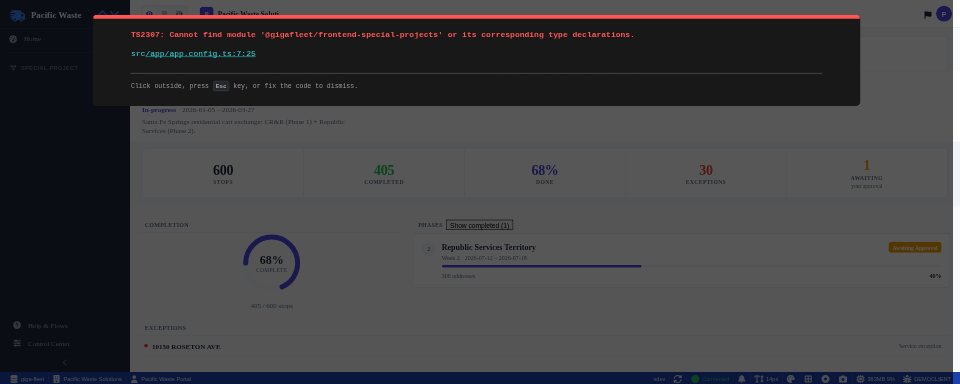
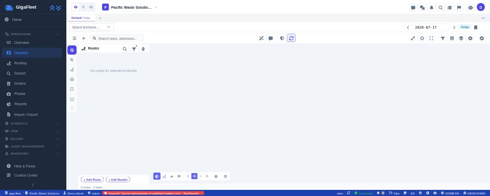

Web App
Dispatcher Dashboard
Route, schedule, and manage your entire operation from one screen. Every module in one place.
Learn moreFrom dispatch to SB1383 compliance — one platform, your brand. Auto-routing, offline-first mobile, project-based billing, and customer portals built to match your workflow.
Trusted by operators running contracts across the US
Dedicated app surfaces
Admin · Mobile · Tablet · Portal
Resident · Demo · API · Webhooks
Infrastructure uptime
Firebase / Google Edge
Single points of failure.
Firebase-backed, always-on.
From the dispatch room to the cab, from the contractor to the city contract-holder — GigaFleet covers every role in the operation.
Route, schedule, and manage your entire operation from one screen. Every module in one place.
Learn moreOffline-first. GPS-tracked. Photo-proof at every stop, even without signal.
Learn morePurpose-built for the cab. Real-time route visualization, telemetry, and completion tracking.
Learn more
Contract-holder visibility into project progress. Scoped to their data, not your whole operation.
Learn more
Real-time vehicle positions, geo-fencing, territory management, and live status from the field.
Learn moreCommercial waste isn't residential. You're managing contracts, territories, exceptions, sub-haulers, and compliance obligations simultaneously. GigaFleet's operations core is purpose-built for this complexity.
No signal? Not a problem. GigaFleet's mobile suite works completely offline — tasks, photos, forms, and signatures all queue locally and sync in order when connectivity returns.
GigaFleet connects field operations to BigQuery analytics, giving managers real-time dashboards and historical analysis without a BI team.
Drag-and-drop dashboard IDE with real-time and historical operational data. Build KPI tiles, route completion charts, and exception trackers — no BI team required.
Raw operational data in Google BigQuery, partitioned by schedule date and ready for any downstream pipeline or analysis.
If-this-then-that automation for status changes, SLA breach alerts, and operational workflows — no code required.
Visual flow builders for complex conditional logic in driver forms, dispatch routing, and exception handling.
Upload any CSV — AI maps columns to your schema automatically. No more hand-mapping client data files every contract cycle.
Scheduled and on-demand reports across routes, drivers, compliance, and billing. Exportable and available via REST API.
Configurable alert rules for exceptions, SLA breaches, and field events — delivered via push notification, email, or webhook.
California's organic waste diversion law requires route-level tracking, phase management, and CalRecycle reporting. GigaFleet's Special Projects module is purpose-built for this obligation — not retrofitted.
Live data from an active SB1383 compliance project
Infrastructure and mobile architecture choices that operators in the field depend on, not features that look good in a deck.
Subscription routing tools solve a narrow problem. GigaFleet solves operations.
| Capability | GigaFleet | Subscription Routing Tools |
|---|---|---|
| Project-based billing | ✓Bill by project scope, milestones, or contract deliverables — not seat count |
–Subscription-only flat fees with no project modeling |
| SB1383 compliance module | ✓Dedicated SB1383 module with CalRecycle reporting, diversion tracking, and per-route compliance data |
–No compliance features — California haulers must build their own reporting layer |
| Per-customer white-label | ✓Your brand, your domain, your portals — per-client customization with no shared branding |
~Shared branded template — logo swap only, no per-client domain or portal ownership |
| Internal ERP for receivables | ✓Receivables, invoicing, and sales pipeline built in — operations and finance in one system |
–Depends on third-party integrations — QuickBooks, Stripe, or a custom sync layer |
| Offline-first field operations | ✓Tasks, photos, forms, and signatures fully functional with zero signal — sync queues in sequence on reconnect |
–Requires active connectivity — drivers in low-signal areas lose access entirely |
| Multi-org / sub-hauler management | ✓Sub-orgs, territories, shared haulers, and cross-org dispatch — built for contracted operations |
–Single-tenant only — one org, one account, no sub-org or contractor management |
| REST API + Webhooks in production | ✓REST API and Webhooks in production — live B2B integrations with city systems and 3rd-party platforms |
~Limited API coverage or Webhook support on roadmap — no production B2B integrations |
| Client + Resident portals | ✓Both portals included — contract-holders get a live witness view; residents get a self-service tracking portal |
~Extra add-on or unavailable — no built-in witness portal for contract-holding clients |
| Custom Dashboard Builder | ✓Dashboard Builder with BigQuery analytics — build any view, any metric, any slice of your data |
–Fixed reports only — no custom queries, no cross-dataset analysis, no BigQuery export |
Book a 45-minute walkthrough tailored to your operation. Yard tracker, SB1383 compliance, disposal-stop workflow, or whatever matters most to you — we'll show you exactly what GigaFleet does for your use case.
Tell us a bit about your operation and we'll tailor the walkthrough to what matters most to you.
We'll be in touch within one business day to confirm your demo time.